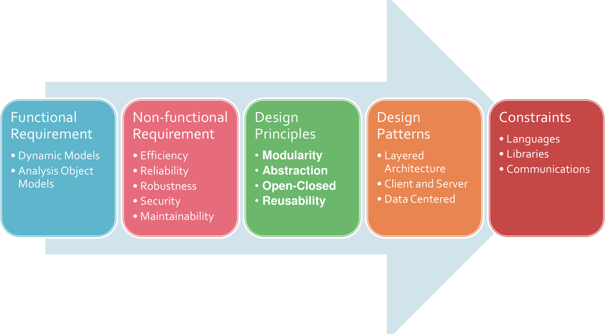
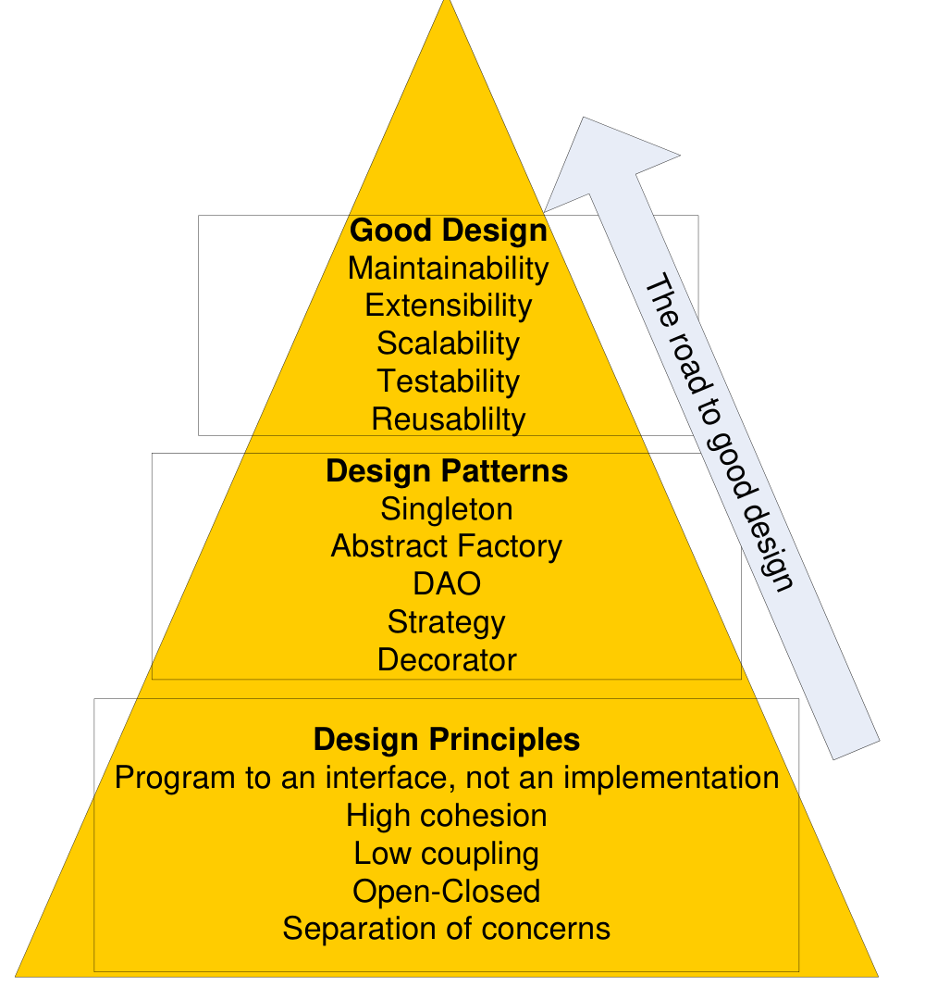
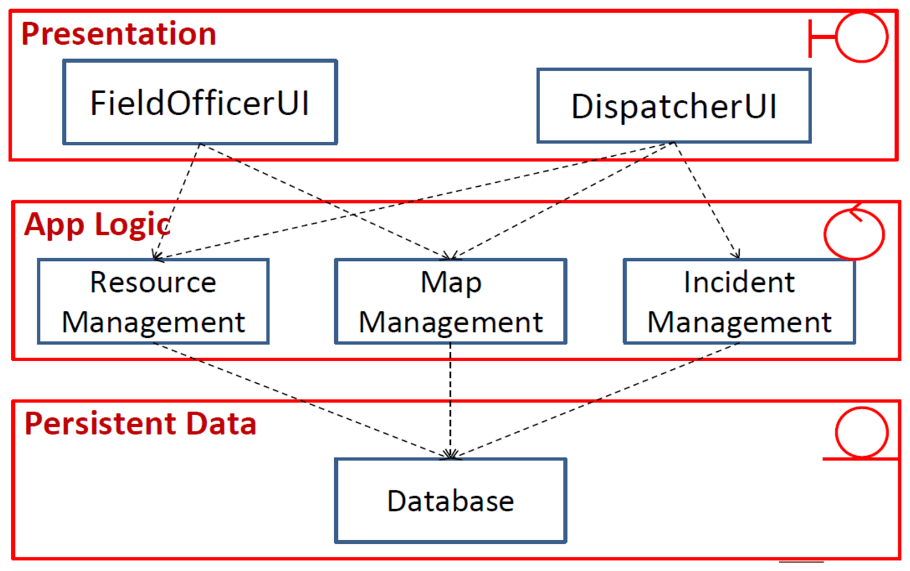
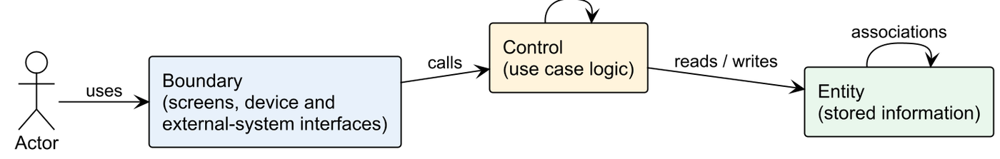

This was written entirely with AI.
From the problem to the solution
Requirements elicitation and analysis describe the problem. Design describes the solution. Design has two levels:
- System design decides the software architecture: the large parts of the system and how they connect.
- Object design (Parts 10–11) decides the detailed classes, interfaces and design patterns inside each part.
The analysis model (boundary, control and entity classes) is the input to system design.
Each SDLC activity produces a model. Each model builds on the model before it:
| Activity | Model it produces |
|---|---|
| Requirements elicitation | Use case model |
| Requirements analysis | Analysis model: problem-domain objects (boundary, control, entity) |
| System design | Software architecture: subsystems |
| Object design | Design model: solution-domain objects (detailed classes) |
| Implementation | Source code |
| Testing | Test cases that verify the code against the requirements |
Why architecture matters
Software systems become larger in every way: more code, more users, more developers, a longer life (often decades) and more versions. The technology and the hardware also change. At the same time, the budget is limited, the schedule is tight, and the system must be easy to maintain.
The architecture decides most of the non-functional qualities of a system:
- performance;
- availability;
- security;
- scalability;
- extensibility and maintainability.
A wrong architecture is very costly to change later, because every part of the system depends on it.
What a software architecture is
Software architecture describes the elements from which systems are built, the interactions among those elements, the patterns that guide their composition, and the constraints on these patterns. (Shaw and Garlan, 1996)
In short: Software architecture = {Components, Connectors}.
- A component is a unit of software that does a function at run time. Examples: programs, objects, processes, clients, servers, databases.
- A connector is an interaction between components: communication, coordination or cooperation. Examples: shared variables, procedure calls, remote procedure calls, communication protocols, data streams.
An architecture is:
- abstract — it hides the details of the components and connectors;
- about structure and interactions — it shows the topology, the components, and the data and control flow between them;
- purposeful — it lets the team show and analyse important properties, and it documents design knowledge for other people.
How to develop an architecture

The large arrow behind the five boxes means that all five feed into one result: the architecture. Read the boxes as five questions that the architect answers. The table below gives each question.
| Input | Question it answers | Examples |
|---|---|---|
| Functional requirements | What must the system do? | Dynamic models, analysis object models |
| Non-functional requirements | Why choose this design over another? | Efficiency, reliability, robustness, security, maintainability |
| Design principles | How do we make a good design? | Modularity, abstraction, open–closed, reuse |
| Design patterns and architectural styles | How have others solved this problem? | Layered, client–server, data-centred |
| Constraints | What limits do we have? | Programming languages, libraries, communication methods |
Design principles
| Principle | Meaning |
|---|---|
| Single responsibility | Each class has one reason to change. |
| Separation of concerns | Put different concerns (display, logic, storage) in different parts. |
| High cohesion | All the parts inside one class or module belong to the same task. |
| Low coupling | Classes depend on each other as little as possible. A change in one class does not force changes in many others. |
| Open–closed | Classes are open for extension but closed for modification. You add new behaviour with new classes, not by editing old classes. |
| Program to an interface, not an implementation | Code depends on an interface. Any class that implements the interface can then be used. |
| Favour composition over inheritance | Give an object a part that does the varying work, instead of making many subclasses. |
| Encapsulate what varies | Find what changes and separate it from what stays the same. |
| Least knowledge | A class talks only to its immediate “friends”, not to the friends of its friends. |
| Don’t repeat yourself (DRY) | Each piece of knowledge exists in one place only. |
| Modularity | Split the system into separate modules with clear interfaces. |

Read the pyramid from the bottom up, in the direction of the arrow. Design principles are the base. Design patterns, in the middle, apply the principles to common problems. The result at the top is a good design: maintainable, extensible, scalable, testable and reusable. You cannot get the top without the layers under it: a pattern used without understanding the principle behind it rarely gives a good design.
Architectural styles
An architectural style is a pattern for how to organise a whole system. It defines:
- a vocabulary of component types (for example filters, layers, clients and servers);
- a vocabulary of connector types (for example procedure calls, data streams, sockets);
- constraints on how they combine (for example “filters do not share state”, “a layer may call only the layer below it”);
- a way to work out the properties of the whole system from the properties of its parts.
The style does not fix the number of components, the type of each connector, or the exact data. A pipe-and-filter system can have 2 filters or 20 filters.

The figure is a tree. Each brace splits a family into its styles. There are five families: independent components, data flow, data-centred, virtual machine, and call and return. The sections below take them one at a time. Note where the layered system sits: it is a call-and-return style, because each layer calls the layer below and waits for the result.
Layered architecture
The system is a stack of layers. Each layer gives services to the layer above it and uses only the services of the layer below it.
The usual three-layer architecture matches the boundary, control and entity classes:
| Layer | Contains | Stereotype |
|---|---|---|
| Presentation | Screens and interfaces | Boundary |
| Application logic | Use case logic | Control |
| Persistent data | Stored data | Entity |

How to read the figure. It is an emergency-response system. Each red frame is a layer, and the icon in its top-right corner is the stereotype of the classes inside it:
- Presentation (boundary): FieldOfficerUI and DispatcherUI, one screen per human actor.
- App Logic (control): Resource, Map and Incident Management.
- Persistent Data (entity): one Database.
Each dashed arrow is a dependency. Every arrow points down, and every arrow goes only to the next layer. A UI never reaches the Database directly. Several UIs can share one logic class: both UIs use Map Management.
A four-layer version splits the entity layer in two. Business objects are the entity classes in memory, such as an Account or a Booking. Persistent data is the database that stores them. Dependencies still go only downwards: presentation → business application logic → business objects → persistent data. Use it when the stored format should be able to change (another database, files) without a change to the business objects.
The rules for dependencies between stereotypes become rules between layers:

Read the figure left to right. An actor uses a boundary. A boundary calls a control. A control reads and writes entities. The loop on Control means that a control can call another control. The loop on Entity means that entities link to each other through associations. No arrow skips a step: there is no actor → control and no boundary → entity.
Benefits of layers:
- Separation of concerns. Each layer handles a smaller problem.
- Low coupling. A layer knows only the interface of the layer below. It does not know how the lower layer works.
- Changeability. You can replace a whole layer, if its interface stays the same. A web app and a mobile app can share the same logic and data layers.
- Easy maintenance. A change inside a lower layer does not force changes in the layers above.
Drawbacks of layers:
- Performance. Each request passes through all layers. More layers mean more overhead.
- Up-calls. Sometimes a lower layer must tell a higher layer that something changed (for example, data changed and the screen must update). A direct call upward breaks the layer rule. The Observer pattern solves this (Parts 10 and 11).
Client–server
Clients send requests to one or more servers over a network. Servers provide shared services, such as data or computation. Many clients can use one server.
- Good for: many users, shared data, web and mobile access, central security.
- Scalability: add more servers behind a load balancer.
- Risk: the server or the network is a single point of failure, unless servers are replicated.
Data flow: pipe-and-filter and batch sequential
Data passes through a series of processing steps (filters), connected by pipes. Filters do not share state. Good for data transformation, such as compilers and media processing. Batch sequential runs each step on the whole data set before the next step starts.
Data-centred: repository and blackboard
All components share one central data store. Components communicate through the data store and not directly. Good when many tools work on the same data, such as an IDE.
Independent components: event systems
Components do not call each other directly. A component announces an event. Other components that registered for that event react to it (implicit invocation). This is the architecture-level form of the Observer pattern.
| Advantages | Disadvantages |
|---|---|
| Modifiability: computation is decoupled | Components are independent, so one component does not know if another received the message |
| Concurrent execution | Needs complicated protocols to make sure that messages arrive |
| Scalability | Correctness is hard to achieve and to prove |
| Easy integration of new components |
Virtual machine: interpreter and rule-based system
The system runs a program or a set of rules that is not native code. An interpreter runs a script language. A rule-based system applies “if–then” rules to facts. Good when users must change the behaviour without recompiling.
Call and return: main program and subroutine, object-oriented
The main program calls subroutines, or objects call methods of other objects. This is the normal style inside one program.
Model–View–Controller
MVC is an architecture for interactive systems. Part 11 covers it in detail.
How designers work
Designers do not find the final design in one step. They:
- understand the requirements and build a model of the problem;
- propose one or more design solutions;
- check each solution against the requirements;
- revise the solution, or look for a new solution, where it does not match;
- compare the solutions and select one;
- work out the selected solution in detail, as a blueprint.
From architecture to a detailed class diagram
A frequent exam question: “Propose an architecture and draw a detailed class diagram with key attributes and methods that reflects the architecture.”
Method:
- Choose the architecture and say why. For most systems with a UI, logic and stored data, choose a layered architecture (three layers). For strongly interactive systems with many views of the same data, choose MVC. Give one or two reasons that come from the requirements.
- Draw each layer as a package or a labelled box: Presentation, Application Logic, Persistent Data.
- Put the classes into the layers:
- boundaries in Presentation (one UI per human actor, one interface per external system or device);
- controls in Application Logic (one manager or controller per use case group);
- entities in Persistent Data.
- Give each class key attributes and methods. Attributes: the data from the data dictionary, with types. Methods: the steps from the use case descriptions.
- Draw the dependencies. UI → controller → entity. A controller can also call a device or external-system interface (control → boundary is allowed). A UI never calls an entity directly. Add multiplicities to the entity associations.
- Add interfaces where the design must be flexible
(for example
PaymentMethod,NotificationChannel). This shows “program to an interface”. - Check that no boundary calls an entity directly.

How to read the diagram:
- Three frames, one per layer. Presentation holds the boundaries, Application Logic the controls, Persistent Data the entities.
- Visibility icons. This tool draws visibility as
icons, not signs. A hollow circle means public (
+). A hollow square means private (-). So the UI methods and controller methods are public,isInsideWindow()is a private helper, and every entity attribute is private. - UnlockDoorUI → UnlockController. The UI method
requestUnlock(doorId)callsunlock(guestId, doorId). The controller reads AccessGrant, checks the window withisInsideWindow(), callssendUnlock()on DoorLockInterface and writes ActivityLog. The arrow to DoorLockInterface points up, from control to boundary. That is allowed: a control may call the interface of a device. - GuestAccessUI → AccessController.
submitGrant(...)callsgrantAccess(...), which creates an AccessGrant.revokeAccess(grantId)changes its status. - Associations among the entities. Guest
1 — *AccessGrant: one guest can hold many grants. AccessGrant* — 1Door: each grant is for one door. - Typed attributes. Every attribute has a type
(
startTime: DateTime,isLocked: boolean). The attributes come from the data dictionary. The methods come from the steps of the use case descriptions.
Proposing an alternative architecture for a non-functional requirement
Another frequent question: “Identify one relevant non-functional requirement and propose an alternative architecture that addresses it.”
- Pick the NFR that the description stresses most. Look for words such as “real time”, “many users”, “secure”, “must always be available”, “notify”.
- Explain why the first architecture is weak for that NFR.
- Propose a style that fixes it, and explain how.
| NFR in the description | Weakness of a simple layered design | Alternative |
|---|---|---|
| Scalability (many users, peak load) | One server handles all requests | Client–server with several replicated servers and a load balancer |
| Availability (must always work) | One server is a single point of failure | Client–server with redundant servers and a replicated database |
| Real-time updates and notifications | Lower layers must call up to the UI | Event-based (publish–subscribe) architecture, or MVC with Observer |
| Security (authentication, roles) | Each UI checks access in its own way | Add a security layer or an authentication server that all requests pass through |
| Extensibility (new devices, new channels) | New types force changes in the logic | Layered design with interfaces plus Strategy and Factory patterns |
| Many different UIs (web, mobile, voice) | UI and logic are mixed | MVC, so that many views share one model |
Getting ready for exam questions
- Always justify the architecture with the requirements. Example: “The system has a web app and a voice assistant. Both use the same data. A layered architecture lets both UIs share the logic and data layers.”
- Name the layers and the stereotype in each layer.
- In the class diagram, keep the layer rule: a UI calls a controller, and a controller calls entities. A UI never calls an entity.
- Know two benefits and one drawback of layered architecture.
- Know the advantages and disadvantages of event-based systems.